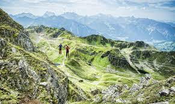

Some people tend to get a little confused when they hear the word hiking. Visions of walkers with heavy backpacks, walking poles, and all manner of fancy outdoor clothing often springs to mind. However, this is often far from the case, as you will soon discover. Hiking is, by definition, simply a long walk, and in the main, one that is undertaken in the countryside. Hiking has been around for much longer than most people would imagine. Its popularity can be attributed to eighteenth-century Europe, with people such as Johann Gottfried Seume setting out on a well-publicised walk from Leipzig to Sicily in 1801 that took him nine months to complete. Even from its early days, a hike is meant to be a pleasurable experience, and it can be as easy or as hard as you want it to be. Hiking is quite wide-ranging and can encompass many other outdoor pursuits under its umbrella. These include climbing hills or even mountains, rock scrambling and bouldering, wild camping, a general walk in the countryside and much more.
Many people reading this will probably not consider themselves to be a hiker. However, if you are someone who enjoys a regular long walk in the countryside, alone or with friends or family, it’s likely, you’ve unwittingly already caught the hiking bug! Mentions of hiking go back as far back as the 1300s. Poets such as Petrarch recounted that he and his brother climbed to the top of Mont Ventoux in 1336, not out of necessity but simply for pleasure. However, as mentioned previously, hiking as we know it today came about in the 18th century when attitudes towards nature and landscapes were changing for the better, which was due in no small part to the Romantic movement. One of the best-known people to have caught the hiking bug in its early days was the Scottish novelist and poet Robert Louis Stevenson. Stevenson. Although known first and foremost as the novelist behind Treasure Island and the Strange Case of Dr Jekyll and My Hyde, Stevenson was also a travel writer. His book “Travels with a Donkey” recounted his journey with a donkey through the Cévennes in France, and in addition to this, he also published an essay in 1876 titled “Walking Tours”. Hiking is a truly global activity, but as we are based in the UK, the remainder of this article will focus on the development of hiking in Britain.
The Scottish priest, Thomas West, was probably the first person in Britain to introduce hiking to a broad audience. In 1778, West produced a guide to the Lake District to encourage people to visit this beautiful part of England, pinpointing places where walkers could view the incredible landscape in all its glory. Other notables who were instrumental in raising the popularity of hiking were the poets William Wordsworth and John Keats, who regularly embarked on walking tours. Paving the way in the 1930s The Hiking Bug would still be an under-the-radar niche activity if it weren’t for a large group of single-minded people in the 1930s. For fifty years, starting in the 1880s, bills were presented to the UK Parliament, asking for the right to roam. Each time, the politicians, who were more than likely large landowners themselves with friends or family in a similar situation, refused to pass them. Hiking, or rambling as it was known then, rapidly increased in popularity in the late 1800s, with dedicated walking clubs being formed. It was these clubs that began actively campaigning for the legal ‘right to roam’. On the 24th of April 1932, the Rambler’s Right Movement had reached the end of its tether and decided that enough was enough. They were fed up with clear favouritism and nepotism by the government of the day. To ensure their views would be taken seriously, a protest walk was organised to Kinder Scout, the highest point in the Peak District. Kinder Scout in the Peak District on a foggy day
The people making up the group included members of the British Workers Sports Federation in Manchester and walkers from Sheffield. In total, more than 400 people took part in the mass trespass, which Bernard ‘Benny’ Rothman led. Despite attempts by groundskeepers, game wardens and the Derbyshire police force, they succeeded in making their point. However, five of the protesters were arrested, including Benny Rothman and jailed for paving the way for us. It was seven more years before the government tried to address the situation, and this came in the form of the Mountain Access Bill. The bill proved highly unpopular with many walking organisations and was subsequently repealed. Although a change was in the ‘offing’, World War II made its presence felt, and it wasn’t until 1949 when the National Parks and Access to the Countryside Act came into force that change happened. The act improved access for all outdoor enthusiasts, and in the year 2000, the Countryside and Rights of Way Act opened the way for even more access to parts of England and Wales. I hope you enjoyed this brief foray into the history of hiking, and it inspires you to get out more to experience the magnificence of mother nature. As I mentioned at the start of this article, hiking can be as easy or as hard as you want it to be. We at The Hiking Bug want as many people to get outdoors, but please ensure that you always check the weather, wear suitable and comfortable clothing and take away anything you bring with you. That way, you’ll be keeping the area you walk in the best way, ready for when you return.
| Walks | Statistics | Days |
|---|---|---|
| Express Day One | 25% | Mondays |
| Express Day Two | 10% | Tuesdays |
| Express Day Three | 30% | Wednesdays |
| Express Day Four | 15% | Thursdays |
| Special Days | 20% | Holidays |